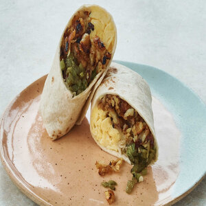

Burrito Recipe

Description
A burrito typically consists of a large flour tortilla filled with seasoned beans, rice, meat, vegetables,
and cheese, which are rolled tightly and heated. Toppings like salsa, sour cream, and guacamole can be added.
Ingredients
Large flour tortilla
Cooked and seasoned beans
Cooked rice
Meat
Vegetables
Shredded cheese
Optional toppings: salsa, sour cream, guacamole, hot sauce, cilantro, lime juice, etc.
Steps
- Warm the flour tortilla in a microwave or on a hot pan.
- Lay the tortilla flat on a clean surface.
- Layer cooked and seasoned beans, rice, meat, vegetables, and cheese on top of the tortilla.
- Fold the sides of the tortilla towards the center, then tightly roll the burrito from the bottom to the top.
- Optional: grill or heat the burrito on a hot pan or griddle for a crispy exterior and warm, melted interior.
- Add desired toppings, such as salsa, sour cream, and guacamole, to taste.
- Serve and enjoy!
Back